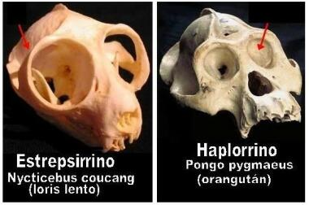
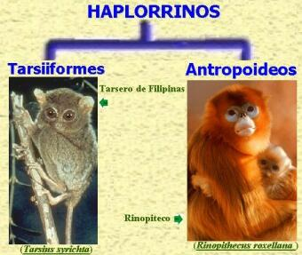

3. ¿En que grupos se divide el orden de los primates?
El orden de los primates se divide en dos grandes grupos: Los estrepsirrinos y los haplorrinos. En la siguiente ilustración podrá ver un representante para cada uno de estos grupos:

A primera vista la diferencia más notable es la presencia de “rinario” en los estrepsirrinos. El rinario es la región húmeda que se extiende desde el interior del labio superior, el cual se encuentra hendido, hasta la base de las fosas nasales. La función del rinario está asociada con el sentido del olfato, más precisamente con una estructura quimiosensorial llamada “órgano vomeronasal”, el cual es estimulado con las sustancias que se encuentran en la orina de las hembras primate. En la ilustración se muestra como ejemplo de los estrepsirrinos al Sifaka de Verraux (Propithecus verreuxi). Note el labio hendido del sifaka. En cambio, los haplorrinos presentan el labio superior continuo y generalmente hay una región peluda entre la base de las aberturas nasales y el labio. En la ilustración podrá observar el labio continuo del macaco de Célebes (Macaca nigra). A esta altura es probable que el lector se halla dado cuenta que los humanos somos primates haplorrinos.
Otra de las diferencias entre los primates estrepsirrinos y los haplorrinos se puede observar en el cráneo, en los primeros la cavidad ocular no presenta cierre post-orbital (siga la flecha roja), mientras que en los haplorrinos el cierre post-orbital es parcial o completo.
Los haplorrinos también se caracterizan por un menor uso del sentido del olfato, comparados con los estrepsirrinos. El grupo de los primates estrepsirrinos incluye a los lémures, indris y el aye-aye de la isla africana de Madagascar, los gálagos y potos de África, y los loris de Asia. Por otro lado, los tarseros, los simios del Nuevo y Viejo Mundo y por supuesto, los seres humanos se clasifican dentro del grupo de los haplorrinos.
Los haplorrinos a su vez se dividen en dos grupos: Los tarsiiformes, y los antropoideos. La principal deferencia entre ambos grupos es que en los antropoideos se encuentra completo el cierre post-orbital.
Los tarsiiformes son unos pequeños primates arborícolas del Sudeste Asiático. Se les llama “tarseros” porque sus huesos tarsales (ubicados en el pie) son largos. En la ilustración puede observar como ejemplo de los tarsiiformes al Tarsero de Filipinas (Tarsius syrichta) y como representante de los antropoideos (grupo al que pertenecemos los humanos), al rinopiteco (Rinopithecus roxellana).
El grupo de los antropoideos está formado por todos los simios, es decir a los monos del Viejo Mundo (Catarrinos) & los monos del Nuevo Mundo (Platirrinos). La forma de la nariz sirve como distintivo de los grupos. Nuevamente tenemos la división de un grupo en dos. Observe la ilustración.

A la izquierda puede verse como ejemplo de los platirrinos al Saki de rostro lampiño (Pithecia irrorata). Platirrino significa “nariz ancha”, ya que en ellos, las fosas nasales se encuentran separadas y mirando hacía adelante. En el chimpancé común (Pan troglodytes), un catarrino, las fosas nasales se dirigen hacía abajo. Catarrino significa “nariz hacia abajo”.
La diferencia en la forma de la nariz no lo es todo. Los catarrinos y platirrinos presentan más diferencias, las cuales pueden observarse en el cráneo. Los platirrinos tienen las siguientes características: Tres premolares, contacto entre los huesos zigomático y el parietal, y carecen de un tubo auditivo óseo. Los catarrinos por su parte poseen contacto entre los huesos frontal y el esfenoides, tienen sólo dos premolares y el hueso timpánico se extiende lateralmente formando un tubo auditivo óseo. Observe la gráfica:

Imagen traducida y modificada de Feagle, J. G. 1999. “Primate Adaptation and Evolution.” Sec. Ed. Acad. Press.
Todos los catarrinos presentan la misma fórmula dental 2.1.2.3/2.1.2.3. Esta sencilla fórmula nos dice que a cada lado de los maxilares se encuentran 2 incisivos, 1 canino, 2 premolares y 3 molares. Para el maxilar inferior la información se encuentra después del slasch ( / ). Estos números deben multiplicarse por dos, dado que la formula dental sólo indica un lado de la cara del mamífero. Es decir, que para los primates catarrinos la formula 2.1.2.3/2.1.2.3 índica un total de 32 dientes.
El grupo de los platirrinos incluye a los monos araña, los monos aulladores, los sakis, lo monos ardilla, los monos capuchinos, sahuíes, uacaris y el mono nocturno. Por otro lado, los catarrinos incluye: macacos, langures, colobos, papiones, mandriles, gibones, gorilas, chimpancés, y por supuesto, nosotros los humanos.
Observe las características catarrinas en el cráneo humano.

4. ¿Si los humanos somos catarrinos y por lo tanto primates del Viejo Mundo, cómo es que hay humanos en América y Australia?
El género humano es africano en su origen, pero de allí salió y fue poblando otros continentes. Australia tiene restos de seres humanos datados en 60.000 años aproximadamente, mientras que América fue ocupada por seres humanos de nuestra especie (Homo sapiens) tan sólo hace unos 12.000 años o un poco antes.
5. ¿Qué nos dice sobre nuestros orígenes el hecho de ser primates catarrinos?
Charles Darwin, al observar las características catarrinas de los humanos, no sólo ubicó a los seres humanos en este grupo, si no que apuntó que el antepasado simiesco de los humanos también eran catarrino:
“Al formar sobre este punto juicio relativo al hombre, debemos estudiar con algún detenimiento la clasificación de los simios. Esta familia ha sido dividida…en el grupo catarrino…y en el grupo platirrino… Ahora bien, el hombre, sin género alguno de duda, por su dentadura, por sus orificios nasales, y varios otros respectos pertenece a la división de los catarrinos…. Resulta pues en consecuencia que el hombre es una rama del árbol simio del Antiguo continente…”
—El Origen del Hombre. Pág. 207. Énfasis añadido.
Y luego añade:
“Ahora bien, siendo tan grande el parecido del hombre con los catarrinos, cuyo tronco está en el Antiguo continente, se debe concluir, por más que esto hiera nuestro amor propio, que los progenitores del hombre pudieron con gran propiedad clasificarse entre las especies designadas…”
—El Origen del Hombre. Pág. 210. Énfasis añadido
<< página anterior | siguiente página >>
Los humanos en el grupo de los primates - Índice
Volver a la sección Ciencias de los orígenes
Comentarios
Comments powered by Disqus